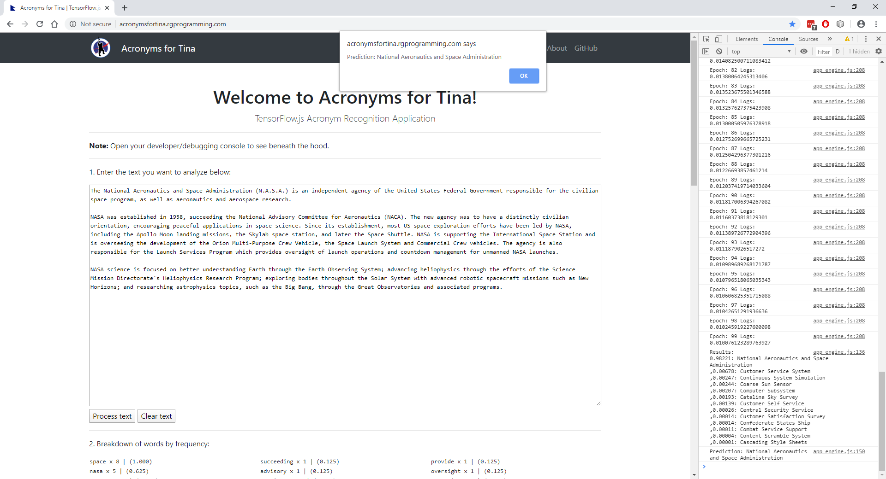

Try it live at http://acronymsfortina.rgprogramming.com/index.html!
Overview
During our internships at NASA's Langley Research Center, one of our mentors, Tina, asked us to help her out on a project: an acronym disambiguation system. She's right about the need; acronyms are a pain in the a** when you are trying to learn about something really dense in a hurry (yay, grad school!). Plus, when I was in the military, I remember the "glazed-eye look" that would appear on my friends and family's faces when I broke into an acronym-filled story. I'm worse; you break out the acronyms with me, and I fall asleep!
One of my fellow Sherpas, Wesley, got pretty far using IBM Watson and the Natural Language Toolkit (NLTK) Project. Here's my take on Tina's project using TensorFlow.js. In a nutshell, it replaces the Iris dataset with words that can be abbreviated using "CSS". Since this is only a proof of concept, I limited the dataset to CSS acronyms that had at least 3000 results in a regular Google search and at least one appearance in Google Scholar (another mentor, Cory, compiled a list of acronyms used by NASA, including "CSS", but I didn't keep them ):
| Search Terms | Number of Results |
|---|---|
| "cascading style sheets" "css" | 4140000 |
| "customer service system" "css" | 805000 |
| "central security service" "css" | 260000 |
| "customer satisfaction survey" "css" | 140000 |
| "combat service support" "css" | 70200 |
| "customer self service" "css" | 54400 |
| "content scramble system" "css" | 35000 |
| "catalina sky survey" "css" | 32900 |
| "continuous system simulation" | 7060 |
| "confederate states ship" "css" | 3980 |
| "computer subsystem" "css" | 3830 |
| "coarse sun sensor" "css" | 3700 |
How it works:
- The app removes all the stop words (e.g., and, the, etc.) from the text, using the list of stop words from the Natural Language Toolkit Project.
- It then converts all the words to singular form using Blake Embrey's awesome script.
- Next, it counts how often each word appears in the text (i.e., the frequency).
- The app then maps as many words as it can to the feature words in the dataset, using the frequency of appearance as its weight (normalized to a scale of 0 to 1).
- It then kicks off the TensorFlow engine, using the built-in CSS dataset to build a training and testing dataset. TensorFlow.js is awesome and Laurence Moroney at Google does an awesome job explaining how it works: check him out at Coding TensorFlow!
- Finally, it runs the map of words against the trained dataset to get a prediction.
The Iris classification application is like the "Hello, World!" of machine learning, and it's a great way to get started. I modified it to use words, but you can replace the dataset with any stats you want, such as readings from engine computers, IoT devices, etc. For a deeper dive, check out Andrew Ng's great tutorials on Coursera. Have fun and good luck!
Run some of these samples!
Once again, our classes are limited to the terms listed in the table above. Look around the web, find some articles related to those acronyms, and try them out. Here's some sample data to start:
"The National Aeronautics and Space Administration (N.A.S.A.) is an independent agency of the United States Federal Government responsible for the civilian space program, as well as aeronautics and aerospace research. NASA was established in 1958, succeeding the National Advisory Committee for Aeronautics (NACA). The new agency was to have a distinctly civilian orientation, encouraging peaceful applications in space science. Since its establishment, most US space exploration efforts have been led by NASA, including the Apollo Moon landing missions, the Skylab space station, and later the Space Shuttle. NASA is supporting the International Space Station and is overseeing the development of the Orion Multi-Purpose Crew Vehicle, the Space Launch System and Commercial Crew vehicles. The agency is also responsible for the Launch Services Program which provides oversight of launch operations and countdown management for unmanned NASA launches. NASA science is focused on better understanding Earth through the Earth Observing System; advancing heliophysics through the efforts of the Science Mission Directorate's Heliophysics Research Program; exploring bodies throughout the Solar System with advanced robotic spacecraft missions such as New Horizons; and researching astrophysics topics, such as the Big Bang, through the Great Observatories and associated programs."
Prediction: National Aeronautics and Space Administration
"Cascading Style Sheets (CSS) is a style sheet language used for describing the presentation of a document written in a markup language like HTML. CSS is a cornerstone technology of the World Wide Web, alongside HTML and JavaScript. CSS is designed to enable the separation of presentation and content, including layout, colors, and fonts. This separation can improve content accessibility, provide more flexibility and control in the specification of presentation characteristics, enable multiple web pages to share formatting by specifying the relevant CSS in a separate .css file, and reduce complexity and repetition in the structural content. Separation of formatting and content also makes it feasible to present the same markup page in different styles for different rendering methods, such as on-screen, in print, by voice (via speech-based browser or screen reader), and on Braille-based tactile devices. CSS also has rules for alternate formatting if the content is accessed on a mobile device. The name cascading comes from the specified priority scheme to determine which style rule applies if more than one rule matches a particular element. This cascading priority scheme is predictable. The CSS specifications are maintained by the World Wide Web Consortium (W3C). Internet media type (MIME type) text/css is registered for use with CSS by RFC 2318 (March 1998). The W3C operates a free CSS validation service for CSS documents. In addition to HTML, other markup languages support the use of CSS including XHTML, plain XML, SVG, and XUL."
Prediction: Cascading Style Sheets:
"The Catalina Sky Survey (CSS) is a NASA funded project supported by the Near Earth Object Observation Program (NEOO) under the Planetary Defense Coordination Office (PDCO). We are based at the University of Arizona’s Lunar and Planetary Lab in Tucson, Arizona. Our mission at CSS is fully dedicated to discover and track near-Earth objects (NEOs) in an effort to meet the congressional mandate to catalogue at least 90 percent of the estimated population of NEOs larger than 140 meters, some of which classify as potentially hazardous asteroids (PHAs) which pose an impact threat to Earth. Longstanding success of the project is attributable to our comprehensive sky coverage, continued development and application of innovative software and our NEO detection pipeline, and the inclusion of near real-time human attention to the NEO discovery and follow-up process."
Prediction: Catalina Sky Survey
"The Central Security Service (CSS) provides timely and accurate cryptologic support, knowledge, and assistance to the military cryptologic community. It promotes full partnership between the NSA and the cryptologic elements of the Armed Forces, and teams with senior military and civilian leaders to address and act on critical military-related issues in support of national and tactical intelligence objectives. CSS coordinates and develops policy and guidance on the signals intelligence and cybersecurity missions of NSA/CSS to ensure military integration. The CSS was established by presidential directive in 1972 to promote full partnership between NSA and the Service Cryptologic Components of the U.S. Armed Forces. This new command created a more unified cryptologic effort by combining NSA and CSS. The Director of NSA is dual-hatted as the Chief of CSS. The principal advisor to Director, NSA/Chief CSS on military cryptologic issues is the Deputy Chief/CSS (DCH/CSS). The DCH/CSS oversees the function of the military cryptology system, manages and cultivates the partnerships between NSA/CSS and the Service Cryptologic Elements, and ensures military capabilities to fulfill the National Cryptologic Strategy."
Prediction: Central Security Service
"The Coarse Sun Sensor (CSS) delivers coarse information about the position of the sun relative to the spacecraft. This information is used for coarse maneuvering of the spacecraft and to inform the spacecraft about the position of the sun when it is in a safe mode of operation. The CSS is a rugged, highly reliable, self-redundant device designed to detect sunlight in potentially a hemispherical field of view (FOV). The sensor is designed to deliver individual detector outputs to the Attitude & Orbit Control Subsystem (AOCS). This approach enables the AOCS to derive solar aspect angles for offset sun positions in a portion of the near-hemispherical FOV of the sun sensor."
Prediction: Coarse Sun Sensor
"In the United States Army, the term combat service support was until 2008 defined as the essential capabilities, functions, activities, and tasks necessary to sustain all elements of operating forces in theater at all levels of war. Within the national and theater logistics systems, it includes but is not limited to that support rendered by service forces in ensuring the aspects of materiel and supply chain management, maintenance, transportation, health services, and other services required by aviation and ground combat troops to permit those units to accomplish their missions in combat. Combat service support encompasses those activities at all levels of war that produce sustainment to all operating forces on the battlefield."
Prediction: Combat Service Support
"Whether I shall turn out to be the hero of my own life, or whether that station will be held by anybody else, these pages must show. To begin my life with the beginning of my life, I record that I was born (as I have been informed and believe) on a Friday, at twelve o’clock at night. It was remarked that the clock began to strike, and I began to cry, simultaneously. In consideration of the day and hour of my birth, it was declared by the nurse, and by some sage women in the neighborhood who had taken a lively interest in me several months before there was any possibility of our becoming personally acquainted, first, that I was destined to be unlucky in life; and secondly, that I was privileged to see ghosts and spirits; both these gifts inevitably attaching, as they believed, to all unlucky infants of either gender, born towards the small hours on a Friday night. I need say nothing here, on the first head, because nothing can show better than my history whether that prediction was verified or falsified by the result. On the second branch of the question, I will only remark, that unless I ran through that part of my inheritance while I was still a baby, I have not come into it yet. But I do not at all complain of having been kept out of this property; and if anybody else should be in the present enjoyment of it, he is heartily welcome to keep it."
Prediction: Who Knows? (Confidence Level Below 0.5)